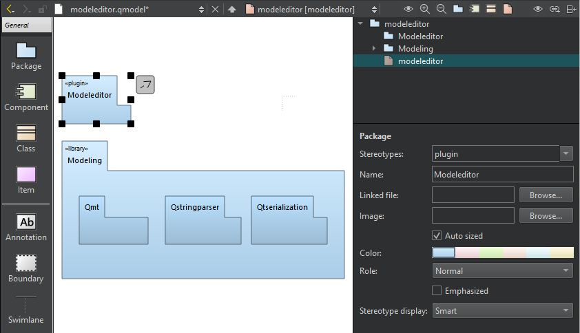

Create UML-style models
Use wizards to create UML-style models and scratch models.
To create models and edit them in the model editor:
- Go to File > New File > Modeling > Model, and then select Choose.
The model file opens in the model editor.
- Drag model elements to the editor and select them to specify properties for them:

A package diagram in the model editor.
- In Stereotypes, enter the stereotype to apply to the element or select a predefined stereotype from the list.
- In Name, give a name to the element.
- In Linked file, select a file to create a link to it from the element name.
- In Image, select an image to use as a custom icon for the element.
- Select Auto sized to reset the element to its default size after you changed the element size by dragging its borders.
- In Color, select the color of the element.
- In Role, select a role to make the model element color lighter, darker, or softer. You can also remove color and draw the element outline or flatten the element by removing gradients.
- Select Emphasized to draw the model element with a thicker line.
- In Stereotype display, select:
- Smart to display the stereotype as a Label, a Decoration, or an Icon, depending on the properties of the element. For example, if a class has the stereotype interface, it is displayed as an icon until it becomes displayed members, after which it is displayed as a decoration.
- None to suppress the displaying of the stereotype.
- Label to display the stereotype as a line of text using the standard form above the element name even if the stereotype defines a custom icon.
- Decoration to show the standard form of the element with the stereotype as a small icon placed top right if the stereotype defines a custom icon.
- Icon to display the element using the custom icon.
- To create a relation between two elements, select the arrow icon next to an element and drag it to the end point of the relation.
- Select the relation to specify settings for it, according to its type: inheritance, association, or dependency. You can specify the following settings for dependency relations, which are available for all element types:
- In Stereotypes, select the stereotype to apply to the relation.
- In Name, give a name to the relation.
- In Direction, change the direction of the connection or make it bidirectional.
- To move the end of a relation to a different element, drag the end point over another element that accepts relations of that type. For example, only classes accept inheritances and associations.
- To create sampling points that divide a relation into two connected lines, select a relation and select Shift and click on the relation line.
If possible, the end point of a relation is moved automatically to draw the line to the next sampling point either vertically or horizontally.
- To remove a sampling point, select Ctrl and select the sampling point.
- To group elements, drag a Boundary element to the editor and resize it to enclose the elements in the group.
Create scratch models
Use a scratch model to quickly put a temporary diagram together. The wizard creates the model file in a temporary folder without any input from you. Therefore, you can assign a keyboard shortcut to the wizard and use it to create and open models with empty diagrams.
To create a scratch model, go to File > New File > Modeling > Scratch Model, and then select Choose.
See also How To: Create Models and Diagrams and Model Editor.